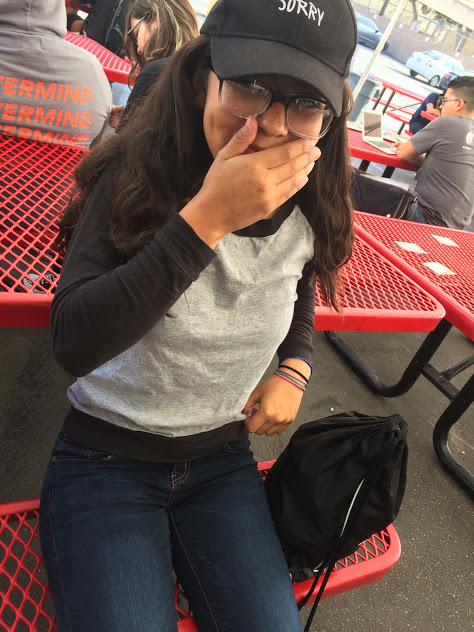

| I either want to be 2 things when I grow up. My first choice is a surgeon or a surgical technologist. If I am not able to pursue that dream I either want to be an athlete or something involving that. The reason why a surgeon or a surgical technologist is one of my options because surgeries seem to interest me and I have been watching shows that deal with that kind of stuff and I tend to learn from those shows. The reason why being an athlete is my second choice is because I play many sports and I have been playing since a young age and I grew up playing and trying out sports. I would like do consider myself a team player because in either baseball, soccer or volleyball I check up on my teammates and see if they get what we're trying to do and to stay focused. I also consider myself serious meaning I am serious about what's going to happen in the future, the tutoring I go to, the hours I spent in the gym playing the sports I love. One major accomplishment that I was very proud of is making high honor roll first semester of this freshman year. One activity that I was involved with is a cancer walk that happened in March. Many of us, were there supporting the participants of that walk. These experiences have taught me that you can do pretty much anything if you put dedication and hard work into it. There is an opportunity for anything and you can make a change. |
 |
|---|